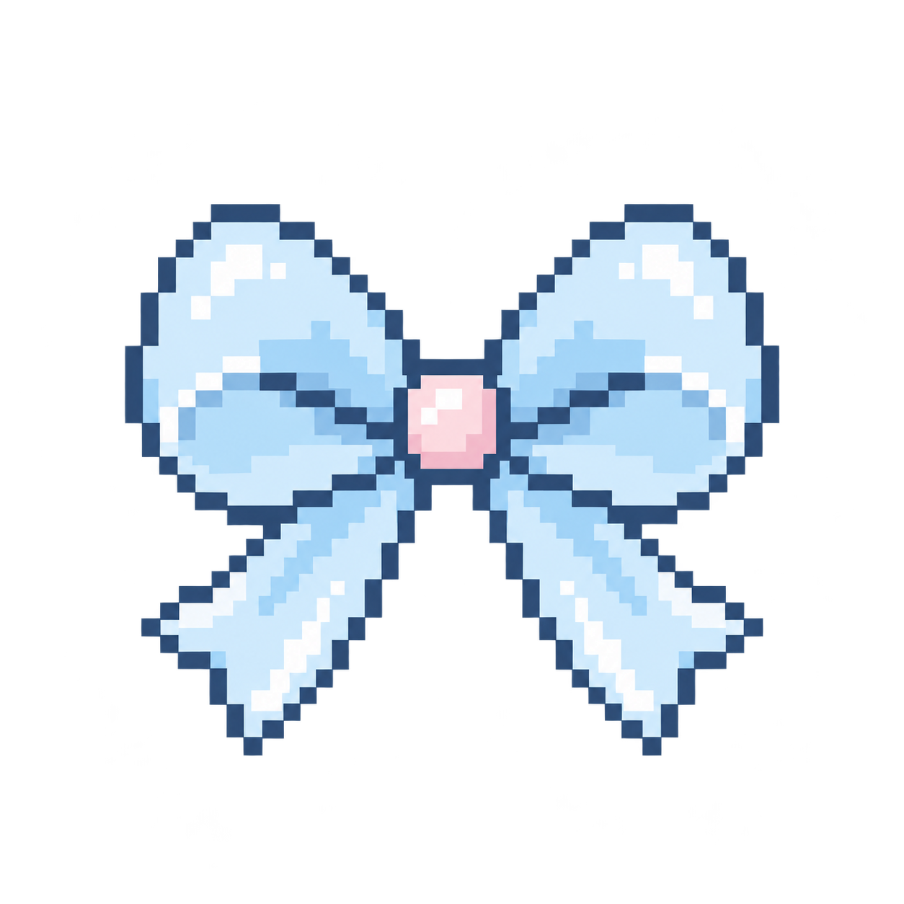
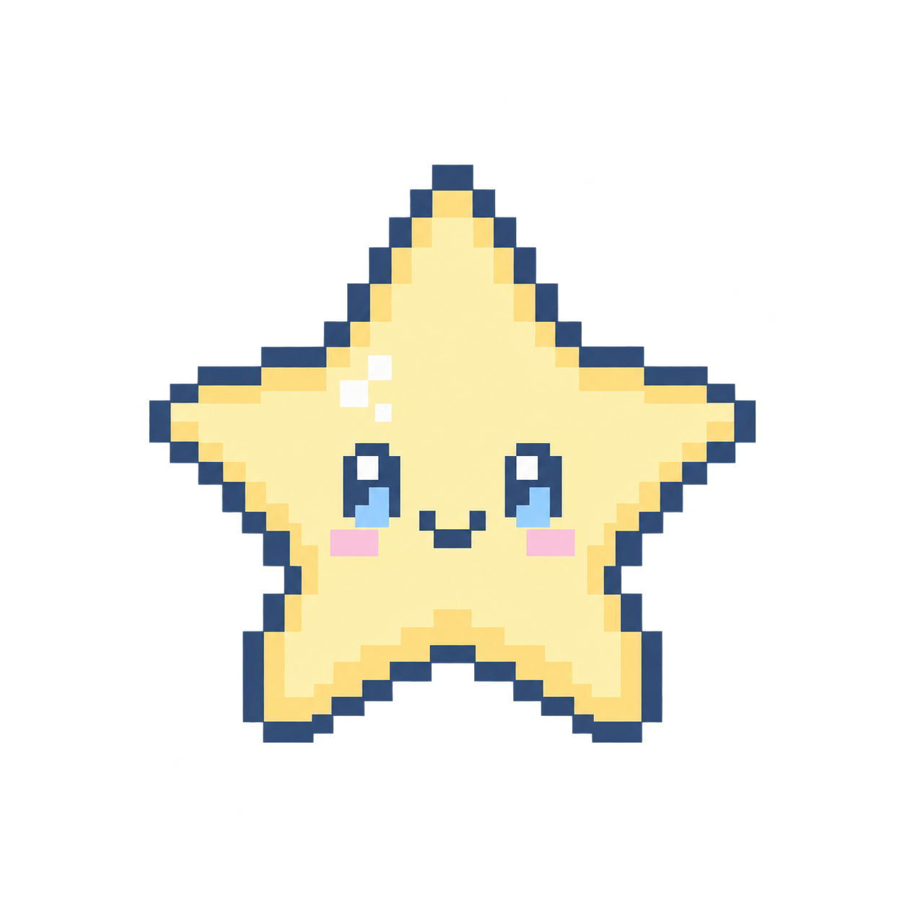

Mobile apps
I build mobile experiences with Flutter, connect them to data through APIs, and use Firebase to support the app behind the scenes.
flutterAPIfirebase

elle's little cornerWelcome to my little cloud.
A cozy home for the things I make, learn, and love.
Hi! My name is Elle and I’m a developer who blends functionality with creativity, building responsive, SEO-friendly websites and API-integrated mobile applications. Beyond development, I create thoughtfully crafted digital experiences through Figma UI/UX designs, custom VS Code themes, and aesthetic icon packs. ♡ Turning ideas into functional, polished, and delightful digital experiences—one line of code at a time. ✧
From mobile screens to websites and little creative experiments, I enjoy turning ideas into things people can use. Here’s a peek at how I build.
I build mobile experiences with Flutter, connect them to data through APIs, and use Firebase to support the app behind the scenes.
I bring websites to life with HTML, CSS, jQuery, and PHP. I’ve also explored WordPress and plugins as another way to build for the web.
I make room for the small details too: creating VS Code themes, experimenting with icons, and giving everyday digital spaces a little more personality.

A new part of my process: I’ve started using AI in some of my projects, exploring where it can help me create and build.Take a closer look at my apps, websites, and little creative projects.
For collaborations, opportunities, or just a friendly hello.